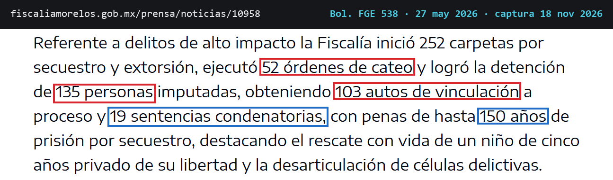
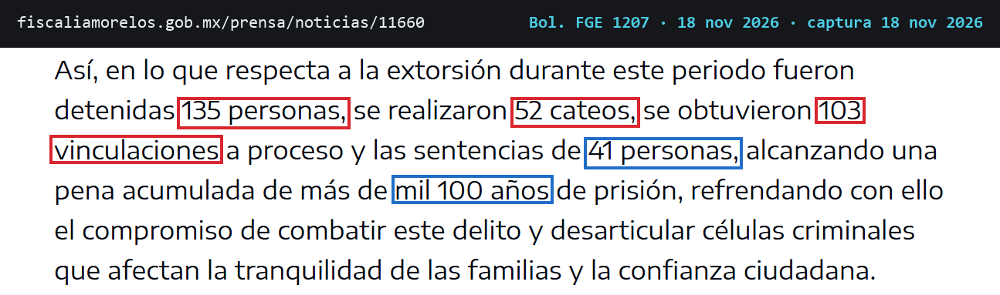
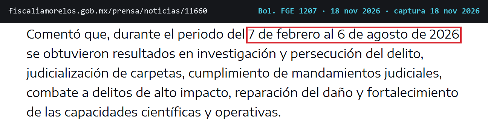
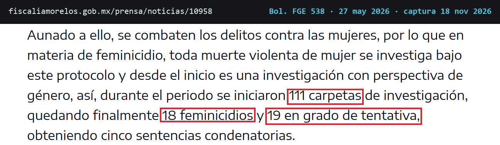
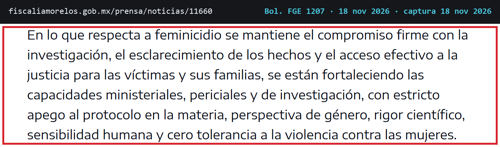

Por escrito
La Fiscalía General del Estado de Morelos publicó en mayo y en noviembre de 2026 las mismas tres cifras de extorsión, 135 detenidos, 52 cateos y 103 vinculaciones, para dos semestres distintos. El párrafo no es idéntico: cambiaron las sentencias y la categoría. En la comparecencia ante el Congreso, el fiscal Fernando Blumenkron dijo 193 vinculaciones donde su boletín dice 103, dio 86% y 96% para la Alerta Alba el mismo día y atribuyó detenciones a un Plan Cuautla del que su informe trae seis días. A la pregunta ciudadana sobre cuántos homicidios y extorsiones hubo en un año, respondió que lo haría por escrito. Con Theodore M. Porter y la confianza en los números, la columna coteja cada cifra con sus propios boletines, con capturas.
Haga la prueba. Abra el boletín 538 de la Fiscalía General del Estado de Morelos, publicado el 27 de mayo, y busque el número 135. Lo encontrará en un párrafo sobre secuestro y extorsión, junto a 52 órdenes de cateo y 103 autos de vinculación a proceso. Ahora abra el boletín 1207, del 18 de noviembre, el día en que el fiscal Fernando Blumenkron Escobar compareció ante el Pleno del Congreso. Busque lo mismo. Ahí están otra vez: 135 personas detenidas, 52 cateos, 103 vinculaciones. Igualitos.


El primer boletín resume el semestre que va del 6 de agosto de 2025 al 6 de febrero de 2026. El segundo arranca al día siguiente y termina el 6 de agosto de 2026. Son dos semestres que no se tocan y tres cifras que no se movieron. Si el recibo de la luz de mayo y el de noviembre marcaran el mismo consumo, al kilowatt, uno no pagaría tranquilo: llamaría a la compañía.
La cuenta cabe en una servilleta. Si se trata de la misma cuenta, en seis meses la Fiscalía no sumó un solo detenido por extorsión. Si es otra, coincidieron tres números a la vez y en el mismo orden.
Lo que sí cambió
Esta columna no sostiene que alguien haya copiado y pegado el párrafo, porque el párrafo no es idéntico. En mayo eran 19 sentencias condenatorias, con penas de hasta 150 años; en noviembre son 41 personas sentenciadas y más de mil 100 años acumulados. Cambió también la palabra que encabeza las cifras. Mayo hablaba de 252 carpetas por secuestro y extorsión; noviembre habla solo de extorsión. Cuando una palabra cambia de significado, dos cifras iguales pueden no medir lo mismo.
El boletín de noviembre suma un dato a favor de la institución: un crecimiento de 142% en las personas detenidas por extorsión, sin decir contra qué periodo se compara. Si ese aumento es real, sus 135 tienen una base propia. Lo que falta es la forma de comprobarlo desde afuera. Theodore M. Porter estudió por qué el público le cree a una cifra oficial y llegó a una respuesta sencilla: le cree cuando el procedimiento que la produce es impersonal y cualquiera puede repetirlo. Sin ese procedimiento a la vista, la cifra depende de la palabra de quien la firma.
En tribuna
Esa palabra tuvo su prueba el mismo 18 de noviembre. En el minuto 33 de la transmisión, el fiscal leyó que "se obtuvieron 193 vinculaciones a proceso". Su boletín de ese día dice 103. Bien puede ser un lapsus, porque el mismo boletín presume 193 mil dosis aseguradas y los números se cruzan al leer. Aun así, ante el Congreso quedó dicho 193.
Con la Alerta Alba ocurrió algo parecido. A los 35 minutos, el fiscal informó una efectividad de 86% en la localización de mujeres y niñas desaparecidas. Una hora y veinte minutos después, al responder a una diputada, habló de 96% de las mujeres, niñas y adolescentes reportadas como desaparecidas. Quizá son universos distintos. El informe no lo aclara.
Sin el procedimiento a la vista, la cifra depende de la palabra de quien la firma.
Seis días de plan
Al hablar de los detenidos por extorsión, el fiscal mencionó a "muchas personas que fueron detenidas desde julio, que inicia el Plan Cuautla". El informe que presentaba cierra el 6 de agosto, mientras que el plan arrancó el 31 de julio. Del Plan Cuautla, ese semestre trae seis días.

En la misma respuesta dijo que Cuautla tenía el primer lugar nacional en extorsión al iniciar el plan y que hoy está "en el onceavo o doceavo lugar". En octubre, la lámina de la Mesa de Coordinación lo ponía en el décimo. Es la misma Mesa que en septiembre informó de 158 detenidos y un mes después puso 67, con la leyenda "información proporcionada por FGE", una resta que esta columna ya revisó en "Coordinados, dicen". Cada vez que lo cuentan, el lugar mejora.
La pregunta de la gente
En mayo, el boletín de la Fiscalía informó que con el protocolo de feminicidio se abrieron 111 carpetas, de las que 18 quedaron como feminicidio y 19 en grado de tentativa.

En noviembre, el párrafo dedicado al tema habla de compromiso, perspectiva de género, rigor científico y sensibilidad humana. No trae una sola cifra.

Casi al final de la comparecencia, una diputada pidió hacer la última pregunta y aclaró que no era suya. Se la habían mandado ciudadanos por sus redes sociales. La leyó así: "¿Cuántos homicidios se registraron de noviembre de 2025 a noviembre de 2026? ¿Cuántos delitos de extorsión fueron denunciados en el mismo periodo?".
Hay que decir que la pregunta pedía un año completo a un informe de seis meses, y que fue la presidencia de la mesa la que ofreció la vía escrita. El fiscal la tomó: "Nosotros tenemos las cifras del semestre. Si me permite hacerlo por escrito, con la precisión debida lo haríamos".
Llegará por escrito, como los dos boletines.
- Fiscalía General del Estado de Morelos, boletín FGE 538, 27 de mayo de 2026 (primer informe semestral; párrafo de secuestro y extorsión y párrafo del protocolo de feminicidio): fiscaliamorelos.gob.mx/prensa/noticias/10958 · copia en el Archivo de Internet: web.archive.org/web/20261118222630/https://www.fiscaliamorelos.gob.mx/prensa/noticias/10958
- Fiscalía General del Estado de Morelos, boletín FGE 1207, 18 de noviembre de 2026 (segundo informe semestral, periodo del 7 de febrero al 6 de agosto de 2026): fiscaliamorelos.gob.mx/prensa/noticias/11660
- Fiscalía General del Estado de Morelos, entrega del Primer Informe Semestral de Gestión, 13 de abril de 2026 (periodo del 6 de agosto de 2025 al 6 de febrero de 2026): fiscaliamorelos.gob.mx/prensa/noticias/10781
- Congreso del Estado de Morelos, transmisión de la comparecencia del fiscal general, 18 de noviembre de 2026: 193 vinculaciones (00:33:13); Alerta Alba 86% (00:35:45) y 96% (01:55:00); "desde julio, que inicia el Plan Cuautla" (01:08:49); "onceavo o doceavo lugar" (01:09:22); pregunta ciudadana y respuesta "por escrito" (02:21:10 a 02:22:12). Los minutos corresponden a la grabación completa de la sesión. congresomorelos.gob.mx
- Mesa de Coordinación Estatal para la Construcción de Paz y Seguridad, conferencias del 24 de septiembre y del 22 de octubre de 2026, revisadas en "Coordinados, dicen", 45 Digital Noticias: 45digitalnoticias.github.io/columnas/coordinados-dicen.html
- Theodore M. Porter, Trust in Numbers: The Pursuit of Objectivity in Science and Public Life, Princeton University Press, 1995. ISBN 978-0-691-03776-9. DOI de la edición electrónica: doi.org/10.1515/9780691210544
Las ligas van a la vista para que cualquiera compruebe por su cuenta. Si alguna dejó de resolver, escríbenos y la reponemos.
SRVO